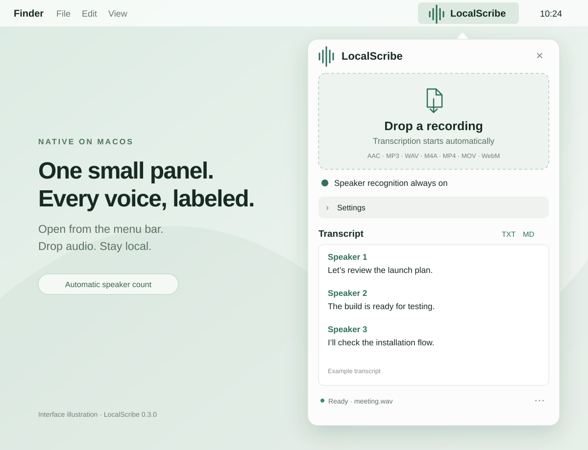

Drop a recording.
Keep every voice.
Open LocalScribe from your menu bar and drop a recording. Transcription starts automatically, with local neural speaker labels. Your media stays on your Mac.
macOS 13+ · Apple Silicon · v0.3.0 prerelease
Ad-hoc signed, not notarized. macOS may require approval to open.

From your menu bar to a labeled transcript.
-
1
Open from the menu bar
Click the icon to open the native SwiftUI panel. Choose a Whisper model once.
No Dock icon · No separate window -
2
Drop in media
Drop one recording into the panel. Processing starts automatically.
AAC · WAV · MP3 · M4A · MP4 · MOV · WebM -
3
Separate the voices
Whisper transcribes the words; a local neural pipeline identifies voice changes.
Automatic speaker count · Always enabled -
4
Edit and export
Edit, copy, or export the labeled transcript. Your last draft is restored after relaunch.
TXT · Markdown
Speaker count is inferred automatically, with no two-person cap. Similar voices, noise, and overlapping speech can still cause mistakes. Labels identify voices within a recording, not people by name.
Your media stays
on your Mac.
Open source, inspectable,
reproducible.
- Transcription runs through whisper.cpp on-device.
- Speech and speaker models download on first use; subsequent processing works offline.
- The release sidecar is FFmpeg 8.1.2 built without GPL or nonfree components.
- Native SwiftUI interface and MIT-licensed source on GitHub.
Keep the recording private.
Keep the transcript useful.
LocalScribe 0.3.0 is a native, open-source menu-bar app for Apple Silicon. Speech and speaker recognition run on your Mac.